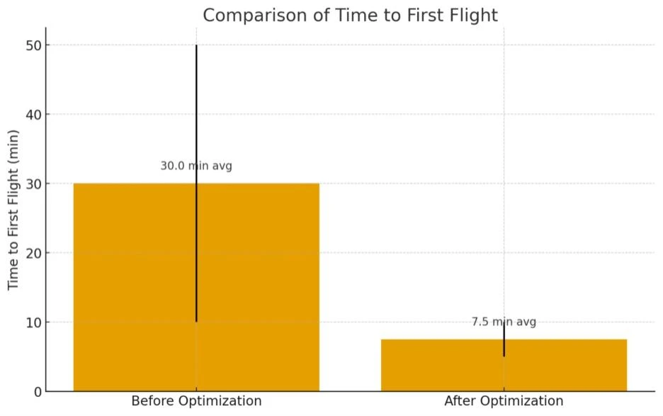

Flyson · Process optimization internship
Agricultural Drone Operations & Process Improvement
Industrial experience
Project overview
At Flyson, I followed agricultural spraying work from the customer order to the last drone flight, including time in the field.
I looked for time and energy losses in the workflow, with particular attention to mission preparation.

My contribution
What I did
I observed spraying missions and reported where preparation and operating stages lost time or energy. I helped standardize stages with checklists, prepared a maintenance plan and took part in daily drone maintenance. I built an Odoo database for flight and customer tracking and worked on Python tools for flight and battery scheduling or analysis.
A closer look
Inside the work

Result
The outcome
The internship study estimated a 60% reduction in field-preparation time through clearer pre-mission coordination and checklists.
Field operations, maintenance planning and mission-preparation workflows.
Methods & tools
- Workflow observation
- Checklists
- Maintenance
- Odoo
- Python